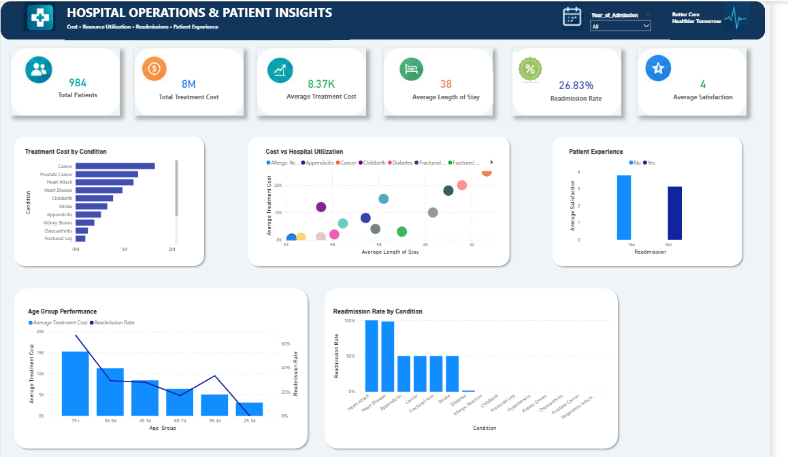

JOHN MUTUA
Data Analyst skilled in SQL, Python (Pandas), Excel, and Power BI,
with experience transforming raw data into actionable business insights.
I build end-to-end analytics projects involving data cleaning,
exploratory analysis, KPI development, and interactive dashboards
to uncover trends and support data-driven decision-making.
I am a Data Analyst with a background in Information Technology,
focused on using data to solve business problems and support
informed decision-making.
I enjoy working with SQL, Python, Excel, and Power BI to transform
raw datasets into meaningful insights, KPIs, and interactive
dashboards.
Business Intelligence & Visualization
Employee Attrition & Retention Analysis

Business Problem:
High employee turnover can increase recruitment and
training costs. This analysis examines employee segments
to identify patterns in observed attrition and highlight
areas for further HR investigation.
Objective:
Analyze employee workforce data to identify attrition
patterns, compare employee segments, and uncover areas
that may require further HR investigation.
Key Insights:
- Overall observed attrition rate was 39.36%.
- Tier 2 employees recorded the highest observed attrition at 60.18%.
- Pune recorded the highest city-level attrition at 50.94%.
Tools: SQL, Power BI
Sales Performance & Customer Revenue Analysis

Business Problem:
Businesses need to understand which products, customers,
markets, and periods contribute most to revenue in order
to improve sales planning and resource allocation.
Objective:
Analyze sales transaction data to understand revenue trends,
identify top-performing products and customers, and evaluate
geographic and seasonal sales performance using SQL and Power BI.
Key Insights:
- Classic Cars generated 39.07% of total revenue, making it the largest product-line contributor.
- The USA generated approximately 36.16% of total revenue.
- Revenue increased by 34.32% from 2003 to 2004, with order volume contributing to the growth.
Tools: SQL, Power BI
Hospital Operations & Patient Insights

Business Problem:
Hospital operations involve balancing treatment costs,
resource utilization, readmissions, and patient experience.
This analysis examines these areas to identify patterns
that may require further investigation.
Objective:
Analyze 984 hospital patient records using Python and
Pandas to identify treatment cost drivers, hospital resource
utilization, readmission patterns, patient experience trends,
and high-cost, low-satisfaction segments.
Key Insights:
- Cancer accounted for 20.04% of total treatment costs, making it the largest cost contributor.
- Readmitted patients had lower average satisfaction (3.11/5) and higher average treatment costs than non-readmitted patients.
- Patients aged 75+ recorded the highest average treatment cost (15,280) and observed readmission rate (67%).
Tools: Python (Pandas), Power BI